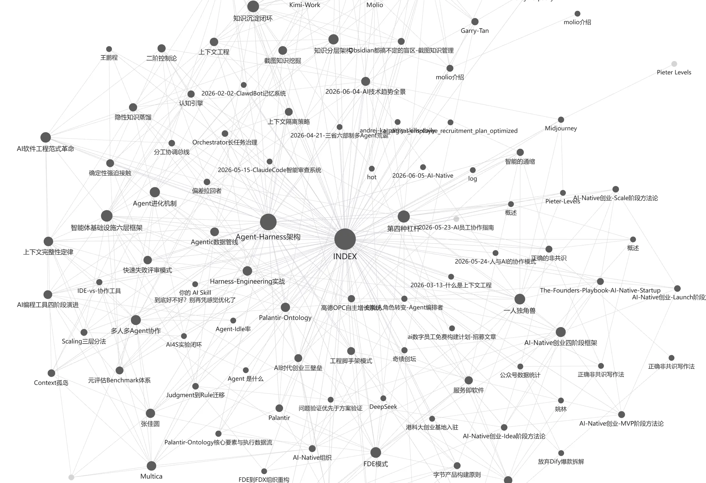
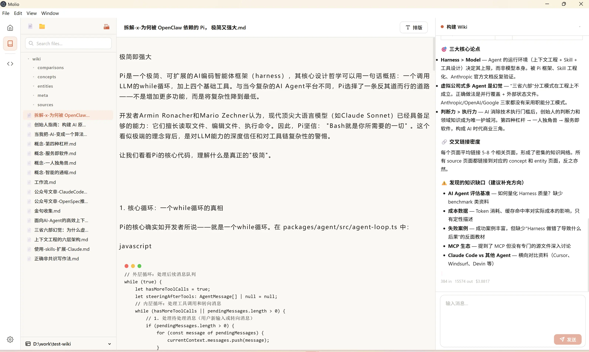
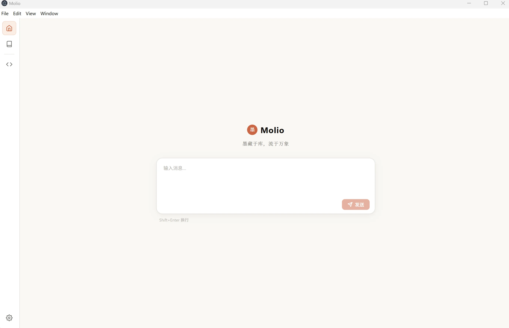

Molio 使用指南
2 分钟看完视频，直接上手
核心功能
点击可放大查看



装好之后，先放什么进去
工具装好了，空库里问不出东西。这些知识底座导入即可用，每套都有一篇长文讲它是怎么整理出来的。
- 知识工程全景图谱 · 它为什么按本体来组织
- 史记知识库 · 纪传体为什么读着乱
- 资治通鉴知识图谱 · 编年体为什么难查人
- 明史知识图谱 · 人和制度为什么分开编
- 红楼梦关系图谱 · 人物为什么要成组读
- 中西哲学思想图谱 · 哲学史怎么按对手关系记
还有两套是免费的，可以先下载看看到手是什么形式：《周易》六十四卦全解 · 老庄思想图谱。全部资源见 资源库。